Download ACP Log Analyzer Version 1.32
(Released 01 January 2013)
An Overview of ACP Log Analyzer
The ACP Log Analyzer app provides a quick and easy mechanism for generating an informational report on your ACP-based observing activities. This can be for the previous evening, the last month, or as long as you've been using ACP (and have the log files related to your observing sessions).
ACP Log Analyzer makes it easy to find out, for example, what your average pointing error is when slewing to objects, what your average FWHM is, how many plate solves failed, how many times an auto-focus run succeeded/failed, etc. This can be done for a single log or for many hundreds, and you can view summarized information about each log and/or overall results for the entire set of log files. And ACP Log Analyzer works quickly too, normally completing in a few seconds or less, even when parsing several hundred logs.
Will it damage my logs?!
No, ACP Log Analyzer simply reads the contents of one or more of your ACP logs (which are just text files with a .log extension), analyzes the text and outputs a summary of the information found. At no time is the contents of any log file altered.
How to install ACP Log Analyzer
ACP Log Analyzer uses a standard Windows installer to install the application. Simply download the latest version of the installer (ACPLogAnalyzerSetup.msi) and save it to a temporary location on your hard disk. Double-click the installer and follow the on-screen instructions.
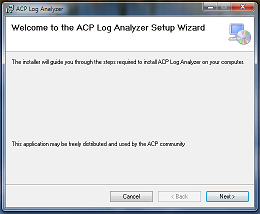{kind=link}
When installation is complete, a new folder containing a link to launch the ACP Log Analyzer will have been created in your Start | All Programs menu:
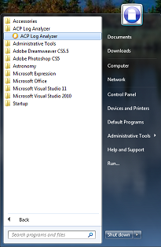{kind=link}
How to remove ACP Log Analyzer
To remove the application, use the Windows Control Panel (e.g. Programs & Features in Windows 7) to uninstall the application.

How to use ACP Log Analyzer
When you first run the application you'll see the following:
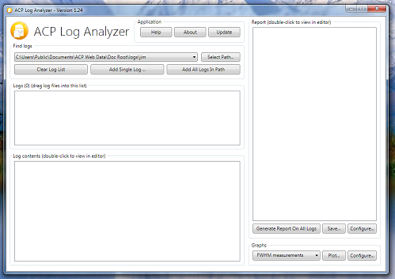{kind=link}
The first thing to do is tell ACP Log Analyzer which logs to work on. This can be done in a number of ways.
The first way is to Drag & Drop one or more files and/or folders from Windows Explorer into the Logs list:
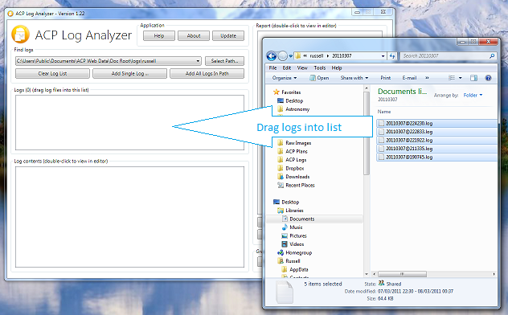{kind=link}
Another alternative is to click the Add Single Log button. This allows you to select a single log file.
You may also click the Add All Logs In Path button. In this case, ACP Log Analyzer will search the folder structure specified in the path bar for ACP logs.

Note that whatever method you choose, all logs are briefly examined to determine if they are valid ACP logs (lots of applications produce logs with a .log extension). Non-ACP logs are rejected.
The contents of a log may be viewed in your default text editor (e.g. Notepad.exe) by double-clicking either the log contents window, or, by double-clicking any item in the list of logs.
If required, you may remove a log from the list by right-clicking it, and then selecting Remove log from list from the popup menu:

Generating a report
You are now ready to create a report - simply select (click on) a log in the list or click the Generate Report On All Logs button. Whatever method you choose, the report appears in the right-most panel in ACP Log Analyzer:
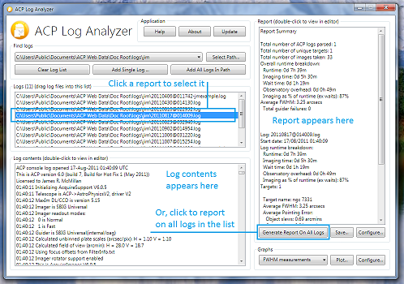{kind=link}
The contents of a report may be saved to disk by clicking the Save Report button.
You may also view it in your default text editor by double-clicking on the report.
Report configuration details
The content of a report may be modified by clicking the report Configure button:

The Configure Report window allow you to control which items appear in report output:
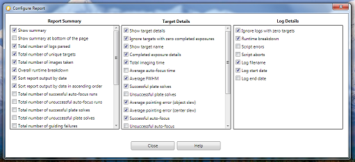{kind=link}
The following table describes each report property in detail:
| Report Summary Properties | |
| Report Property | Description |
| Show summary | Shows the report summary if checked, otherwise the summary is not displayed |
| Show summary at bottom of the page | Shows the summary at the bottom of the report if checked, otherwise the summary will be at the top |
| Total number of logs parsed | Shows the total number of valid ACP logs parsed. Logs are inspected when they are added to the log list to confirm they are valid ACP logs (lots of applications use the .log file extension) |
| Total number of unique targets | The overall (for all logs) count of unique observing targets |
| Total number of images taken | The overall count of successfully completed exposures. This number does not include pointing exposures, auto-focus exposures, etc. |
| Overall runtime breakdown | Provides an overall time-based breakdown of observing activities. This includes imaging time (the time spent actively taking exposures), wait time (time spent waiting for certain conditions, e.g. plan wait statements such as #WAITFOR, #WAITUNTIL, etc.), observatory overhead (all other time not included in the other categories), imaging as % of runtime (shows the percentage of time spent usefully taking images) |
| Sort report output by date | Sorts report output by date if checked |
| Sort report output by date in ascending order | Sorts the output in ascending order if checked, otherwise output is sorted in descending order |
| Total number of successful auto-focus runs | The overall count of successfully completed auto-focus runs |
| Total number of unsuccessful auto-focus runs | The overall count of auto-focus runs which did not complete successfully |
| Total number of successful plate solves | The overall count of successfully completed plate solve operations |
| Total number of unsuccessful plate solves | The overall count of failed plate solve operations |
| Overall guider failure/unguided imaging count | The overall count of failed auto-guiding operations |
| Overall successful all-sky plate solve count | The overall count of successful all-sky plate solve operations (new in 1.32, ACP 7) |
| Overall unsuccessful all-sky plate solve count | The overall count of unsuccessful all-sky plate solve operations (new in 1.32, ACP 7) |
| Overall guider failure/unguided imaging brkdn | Show a breakdown of the log, target and time when the guiding failed (and imaging of a target (not an auto-focus target) continued unguided) |
| Overall average FWHM | The overall average FWHM for all target images taken in all logs. FWHM measurements only include data for successful plate-solves on imaging targets (e.g. pointing update FWHM's are ignored) |
| Overall average HFD | The overall average HFD as reported by FocusMax for all target images taken in all logs. Only applies to successful AF runs |
| Overall average pointing error (object slew) | The overall average pointing error following a slew to a target. This includes imaging targets, auto-focus targets, returns from auto-focusing, etc. |
| Overall average pointing error (center slew) | The overall average pointing error following a slew to center an object in the FoV |
| Overall average auto-focus time | The overall average time taken to successfully complete an auto-focus (failed attempts are ignored). This does not include slew time to target stars. This value is a measure of the time from when ACP hands control to FocusMax until control passes back to ACP |
| Overall average guider start-up time | The overall average time taken for the guider to successfully start (failed starts are ignored) |
| Overall average guider settle time | The overall average time taken for the guider to successfully settle (failed attempts are ignored) |
| Overall average filter change time | The overall average time taken for filter changes (the results for all filters are combined) |
| Overall average pointing exp/plate solve time | The overall average time taken to successfully complete the process to take a pointing exposure and solve the resulting image (failed attempts are ignored) |
| Overall average slew time (targets) | The overall average time taken to slew to observing targets (all other types of slews are ignored) |
| Overall average all-sky plate solve time | The overall average time taken to successfully complete all-sky plate solves (new in 1.32, ACP 7) |
| Per-Target Details Properties | |
| Report Property | Description |
| Show target details | Displays target details if checked, otherwise all target details are not displayed (although the details of the target are included in other statistics and calculations) |
| Ignore targets with zero completed exposures | If checked, targets where no images have been successfully taken are ignored (not displayed) |
| Show target name | Shows the target's name if checked |
| Completed exposure details | Displays a breakdown of successfully completed exposures, including imaging time, number of images for each filter and binning levels |
| Total imaging time | Displays the total time spent imaging this target |
| Average auto-focus time | Displays the average time spent auto-focusing on this target on this target |
| Average FWHM | Displays the average FWHM for this target. FWHM measurements only include data for successful plate-solves on imaging targets (e.g. pointing update FWHM's are ignored) |
| Average HFD | Displays the average HFD as reported by FocusMax for all target images in the selected log. Only applies to successful AF runs |
| Successful plate solves | Displays the total number of successful plate solves for this target |
| Unsuccessful plate solves | Displays the total number of unsuccessful plate solves for this target |
| Successful all-sky plate solves | Displays the total count of successful all-sky plate solve operations for this target (new in 1.32, ACP 7) |
| Unsuccessful all-sky plate solves | Displays the total count of unsuccessful all-sky plate solve operations for this target (new in 1.32, ACP 7) |
| Average pointing error (object slew) | Displays the average pointing error following a slew to a target. A 'target' is defined as an actual imaging target, an auto-focus star and returns to an imaging target from auto-focusing. |
| Average pointing error (center slew) | Displays the average pointing error following a slew to center this target in the FoV |
| Successful auto-focus | Displays a count of the number of successful auto-focus runs for this target |
| Unsuccessful auto-focus | Displays a count of the number of unsuccessful auto-focus runs for this target |
| Guider failure/unguided imaging count | Displays a count of the number of times guiding failed (and an exposure proceeded unguided) for this target |
| Guider failure/unguided imaging breakdown | Shows a breakdown of when guiding failed for this target |
| Average guider start-up time | Displays the average time taken for the guider to successfully start while imaging this target (failed starts are ignored) |
| Average guider settle time | Displays the average time taken for the guider to settle while imaging this target (failed starts are ignored) |
| Average filter change time | Displays the average time taken for filter changes while imaging this target (the results for all filters are combined) |
| Average pointing exposure/plate solve time | Displays the average time taken to successfully complete the process to take a pointing exposure for this target and solve the resulting image (failed attempts are ignored) |
| Average slew time (targets) | Displays the average time taken to slew to this target (all other types of slews are ignored) |
| Average all-sky plate solve time | Displays the average time taken to successfully complete all-sky plate solves (new in 1.32, ACP 7) |
| Log Details Properties | |
| Report Property | Description |
| Ignore logs with zero targets | If checked, logs with no targets are ignored (they are not displayed and all their properties are excluded from other statistics and calculations) |
| Runtime breakdown | Shows a time-based breakdown of log activity if checked, otherwise the breakdown is not displayed |
| Script errors | Shows a count of script errors if checked |
| Script aborts | Shows a count of scripts that were aborted by the user if checked |
| Log filename | Displays the log's filename (excluding the path) if checked |
| Log start date | Displays the log's start date/time if checked |
| Log end date | Displays the log's end date/time if checked |
Generating a graph
Log Analyzer allows you to generate 22 different types of graph that plot data points for key observing activities.
Simply select the required graph type and click Plot:

The graph appears in a floating window, which you can move and resize as required. If you resize the window the graph will rescale to take maximum advantage of available space. When you are finished reviewing the graph you may either close the window or leave it open (perhaps to compare with another graph - you may have as many graph windows open as you like):
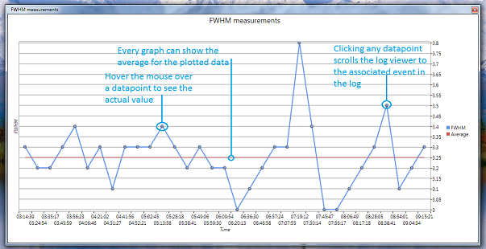{kind=link}
The available graphs types are as follows:
- All FWHM measurements for the current log
- All HFD measurements for the current log
- A comparision of FWHM verses HFD measurements for the current log
- All pointing errors (object slew) for the current log
- All pointing errors (center slew) for the current log
- All guider start-up times for current log
- All guider settle times for current log
- All filter change times for current log
- All pointing exposure/plate solve times for the current log
- All slew times (targets) for the current log
- All-sky plate solve times for current log (new in 1.32, ACP 7)
- Average FWHM measurements for all logs
- Average HFD measurements for all logs
- A comparision of average FWHM verses HFD measurements for all logs
- Average pointing error (object slew) for all logs
- Average pointing errors (center slew) for all logs
- Average guider start-up times for all logs
- Average guider settle times for all logs
- Average filter change times for all logs
- Average pointing exposure/plate solve times for all logs
- Average slew times (targets) for all logs
- Average times for successful all-sky plate solves for all logs (new in 1.32, ACP 7)
Every graph displays an average line, indicating the average value for all the graph's data points. This line can be hidden by right-clicking anywhere on the graph and selecting Hide Average:

If the average line is hidden, it may be re-displayed by right-clicking anywhere on the graph and selecting Show Average:
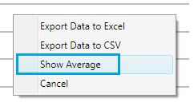You may Export the data from any graph by right-clicking on the graph and selecting one of the export options presented in the popup menu:
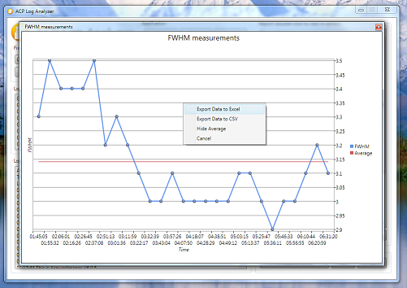{kind=link}
Selecting Export Data to CSV creates a comma-separated-variable text file, which is in a suitable format for opening with Excel, Access, and many other commercial applications.
Selecting Export Data to Excel opens Excel (you must have this installed on your computer) and then adds the required data to a blank sheet. You may then create graphs of your data using the more comprehensive features in Excel:
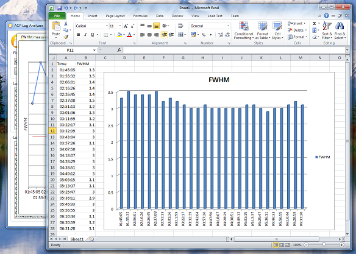{kind=link}
Clicking on any data-point (except on the average line) scrolls the log contents window to highlight the relevant event. This is only available for single-log graphs (i.e. graphs showing overall averages from multiple logs do not have associated single events).
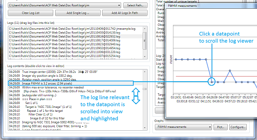{kind=link}
Changing the look of graphs
Log Analyzer allows you to change the way your graphs look. Click the Configure button:

The Configure Graph Plot window appears. Graph configuration properties are arranged in six tabs, with the Text tab being selected initially by default:
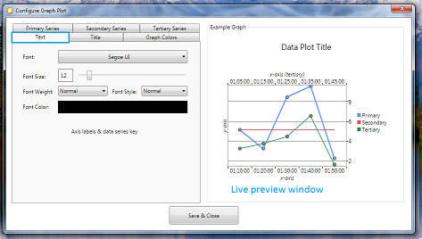{kind=link}
The Text tab allows you to change the appearance of all text on the graph (legend, axis, etc.), except the title (see the Title tab). As you make changes to the font, size, color, etc., notice that the example graph updates to show you what your finished graph will look like.
The Title is similar in layout the the Text tab. Here you can set the look of the graph title, which appears at the top of the window:
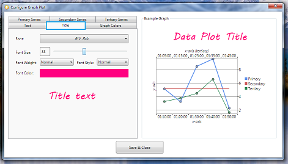{kind=link}
The Graph Colors tab allows you to change the background color of the graph. You can also change the background color of the graph legend:
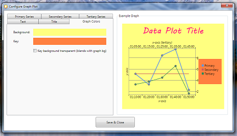{kind=link}
The Primary Series tab allows you to change the properties of the primary data series. You can configure the thickness of the graph line, its color, and if you want individual data points to be shown or not. Note that if you turn data points off, you will no longer be able to hover the mouse over the graph to see individual values:
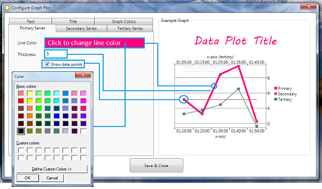{kind=link}
The Secondary Series and Tertiary (third) Series tabs are similar in layout to the Primary Series tab. They allow you to change the properties of the secondary (i.e. graph average) and tertiary (e.g. HFD on the FWHM v HFD graph) data series':
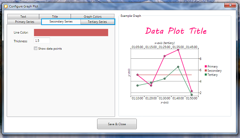{kind=link}
Program updates
ACP Log Analyzer automatically checks to see if you are running the latest version. If an update is available you will be asked if you wish to download and install it:

You can either start the download by clicking Download Update or defer the upgrade by clicking No Thanks. The next time the application runs you will be reminded about the available update.
To prevent the application checking for updates, uncheck Always check for updates.
If you decide to proceed with the update, download progress is displayed:

When the download is complete you will be asked if you wish to install the update now:

You can opt to install the update, in which case the application will close and the installation of the upgrade will begin. Alternatively, you can defer the installation by clicking Don't Install Update. You will be prompted to install the previously downloaded update the next time you run the application.
Log Parsing Rules
In order that the process used by ACP Log Analyzer when interpreting ACP log files may be transparent and open to review and feedback, we present here a simplified version of the parsing rules employed by Analyzer.
| Event | Imaging target |
| Start Trigger | "starting target" |
| End Trigger | "starting target" |
| Exclusions | - |
| Notes | A new target triggers the end of the previous target |
| Event | Target imaging exposure |
| Start Trigger | "imaging to" |
| End Trigger | "taking" |
| Exclusions | - |
| Notes | - |
| Event | FWHM measurement |
| Start Trigger | "image fwhm is" |
| End Trigger | "imaging to" |
| Exclusions | Pointing update exposure FWHMs |
| Notes | Only imaging exposure FWHMs are recorded (pointing exposure FWHMs are excluded) |
| Event | Auto-focus time measurement |
| Start Trigger | "start slew to autofocus" |
| End Trigger | "autofocus finished" + successful final plate solve |
| Exclusions |
Center slew operations FocusMax reports a failure Plate-solve failure (for any reason) |
| Notes |
AF time measurement includes:
Time to slew to the AF target Acquiring the AF star (includes a possible plate solve by FocusMax) The actual focusing process handled by FocusMax Re-slew back to the original target Pointing update/slew Only auto-focus runs which result in successful plate-solves are included in the result set |
| Event | Pointing error measurement (object slew) |
| Start Trigger | "start slew to" |
| End Trigger | "(slew complete)" + successful final plate solve |
| Exclusions |
Anytime "start slew to" is immediately preceded by "re-slew to target" (this is a 'center' slew) Plate-solve failure (for any reason) |
| Notes |
For our purposes an 'object' slew is defined as:
Slews to imaging targets (e.g M57, etc.) Slews to auto-focus targets Return slews from AF targets Only slews which result in successful plate-solves are included in the result set |
| Event | Pointing error measurement (center slew) |
| Start Trigger | "Re-slew to target" |
| End Trigger | "(slew complete)" |
| Exclusions |
Anytime "re-slew to target" is immediately followed by "start slew to autofocus" (there should be no plate-solve after re-slew to a focus star) Plate-solve failure (for any reason) |
| Notes | Only slews which result in successful plate-solves are included in the result set |
| Event | Slew (to target) time |
| Start Trigger | "start slew to" |
| End Trigger | "slew complete" |
| Exclusions |
Anytime "start slew to" is immediately preceded by "re-slew to target" (this is a 'center' slew) Plate-solve failure (for any reason) Pointing update, re-slew to target or start of slew to new target found while looking for slew completion time |
| Notes | Only slews which result in successful plate-solves are included in the time result set |
| Event | Plate solve count |
| Start Trigger | "solved!" |
| End Trigger | - |
| Exclusions | - |
| Notes | - |
| Event | Plate solve error count |
| Start Trigger |
Any of:
"plate solve error!" "no matching stars found" "solution is suspect" |
| End Trigger | - |
| Exclusions | - |
| Notes | - |
| Event | Successful auto-focus count and HFD value |
| Start Trigger | "auto-focus successful!" |
| End Trigger | HFD = {value} |
| Exclusions | - |
| Notes | - |
| Event | Auto-focus failure count |
| Start Trigger | "**autofocus failed" |
| End Trigger | - |
| Exclusions | - |
| Notes | - |
| Event | Script error count |
| Start Trigger | "script error" |
| End Trigger | - |
| Exclusions | - |
| Notes | - |
| Event | Script abort count |
| Start Trigger | "script was aborted" |
| End Trigger | - |
| Exclusions | - |
| Notes | - |
| Event | Guider start-up time |
| Start Trigger | "trying to autoguide" |
| End Trigger | "autoguiding at" |
| Exclusions | - |
| Notes | - |
| Event | Guider settle time |
| Start Trigger | "guider check ok" |
| End Trigger | "imaging to" |
| Exclusions | - |
| Notes | We start by looking for the successful end of the settle time, then we work backwards to find the start time |
| Event | Filter change time |
| Start Trigger | "switching from" |
| End Trigger | "(taking" |
| Exclusions | "(guide star" found while looking for end trigger |
| Notes |
If not doing a pointing update there is no way of working out the filter change time. This is because the change time is included as part of the guider start-up time |
| Event | Wait time |
| Start Trigger | "wait until" |
| End Trigger | "wait finished" |
| Exclusions | - |
| Notes | - |
| Event | Pointing exposure/plate solve time updates |
| Start Trigger | "updating pointing" + successful plate-solve |
| End Trigger | Successful plate-solve time |
| Exclusions | Plate-solve failure (for any reason) |
| Notes | Only exposures which result in successful plate-solves are included in the time result set |
| Event | Guider failure |
| Start Trigger |
Any of:
""**autoguiding failed" ""excessive guiding errors" ""guider stopped or lost star" |
| End Trigger |
Any of:
"will try image again, this time unguided" "**guiding failed, continuing unguided" |
| Exclusions | Guider failures where imaging did not continue unguided |
| Notes | Only guider failures where ACP carried on imaging unguided after the failure are included in the result set |
| Event | All-Sky plate solve success count (new in version 1.32, ACP 7) |
| Start Trigger | "Attempting all-sky plate solution" |
| End Trigger |
Any of:
"All-sky solution failed" "All-sky solution was incorrect" "All-sky solution successful" |
| Exclusions | - |
| Notes | Only successful all-sky solves are counted |
| Event | All-Sky plate solve failure count (new in version 1.32, ACP 7) |
| Start Trigger | "Attempting all-sky plate solution" |
| End Trigger |
Any of:
"All-sky solution failed" "All-sky solution was incorrect" "All-sky solution successful" |
| Exclusions | - |
| Notes | Only failed all-sky solves are counted |
| Event | All-Sky plate solve time (new in version 1.32, ACP 7) |
| Start Trigger | "Attempting all-sky plate solution" |
| End Trigger |
Any of:
"All-sky solution failed" "All-sky solution was incorrect" "All-sky solution successful" |
| Exclusions | - |
| Notes | Only successful all-sky solves are used |
Technical details
ACP Log Analyzer was developed in Microsoft Visual Studio 2010/2012 using C#, the .NET Framework version 4 and the Windows Presentation Foundation (WPF).
Requirements
- Windows XP (32/64-bit), Windows Vista (32/64-bit), Windows 7 (32/64-bit) or Windows 8 (32/64-bit)
- Microsoft .NET Framework version 4 (full framework or client profile)
Download the latest version
The latest version of the ACP Log Analyzer app can be downloaded from here: ACPLogAnalyzerSetup.msi.
Note that if you already have version 1.2 or higher installed, the application can automatically check for updates and install them if required.
Release Notes
Version 1.32 (01 January 2013)
-
Support for All-Sky plate solves (new in ACP 7)
Added support for the new all-sky plate solve feature added in ACP 7.
New reporting and graphing features introduced as follows:- Report on overall count of successful all-sky plate solves
- Report on overall count of unsuccessful all-sky plate solves
- Report on per-target count of successful all-sky plate solves
- Report on per-target count of unsuccessful all-sky plate solves
- Plot of all-sky plate solve times for the current log
- Plot of average times for successful all-sky plate solves for all logs
- Pointing errors during the all-sky pate solve process are ignored (because they are unrepresentative)
- Pointing errors immediately following a successful all-sky pate solve are inlcuded
-
Moved source to Visual Studio 2012
This has no impact on application features -
New installer
Forced to introduce a new third-party (InstallShield 2012 LE) installer as Visual Studio 2012 no longer provides setup projects -
Code clean-up
Many changes to clean-up and standardize code (following inspection and code analysis with ReSharper). This has no impact on application features -
Bug fix:
Fixed a bug where attempting to select a 'non-selectable' graph plot option caused subsequent valid selections not to output a valid graph -
Minor changes to Auto-Update logic
The auto-update feature now downloads updates to the user's Desktop (previously it was a hard-to-find temporary folder)
Version 1.31 (05 April 2012)
-
Bug fix:
Fixed a bug where clicking the 'Add Single Log' button without having previously selected a path caused the application to stop responding -
Bug fix:
Fixed a system-wide bug related to the timing of operations which spanned the midnight 'time-flip'. This resulted in the time-span for some operations being assigned a negative value -
Bug fix:
Fixed a bug where the text report was showing total imaging time, rather than the individual imaging target totals -
Deployment server change
Made changes to reflect the fact that the application is now served from http://www.rarcher.net
Version 1.30 (13 February 2012)
-
Bug fix:
Fixed an issue where some measurements (e.g. guider settle time) that happen instantly (take zero seconds to complete) were not being recorded for either text reports or graphs. Such measurements are now being correctly reported and graphed
Version 1.29 (07 December 2011)
-
Bug fix:
Fixed minor issue with Slew (to target) time. We now ignore rare instances where the slew starts but ACP doesn't report the slew end time. These instances are detected by looking for pointing updates, re-slews to targets or starting slews to other targets -
Internal code refactoring:
- Split the Log class into a partial class, spread over two files (the log parsing methods were split out)
- Split the ParseLog() method so that each log event's processing was refactored into distinct methods (was in one large method)
- Reworked all the average, sum, etc. type methods/getters to use the built-in .NET Average, Sum, etc. extension methods
- Refactored enumerations of properties where possible with LINQ expressions
- Refactored log properties to use on-demand calculated values (previously used cached private members exposed by getters)
- Refactored report, again by using LINQ to query log data and eliminate duplicated data
- Numerous other changes to clean, simplify and improve code quality
Version 1.28 (23 November 2011)
-
Clicking on a graph data-point now scrolls the log
Clicking on any data-point (except the average line) scrolls the log contents window to highlight the relevant event in the log. This only works for "currently selected log" graphs
Version 1.27 (22 November 2011)
-
FWHM v HFD graphs now have two independent axes
FWHM v HFD comparision graphs now show the two data sets on independent (overlaid) axes. This means that both FWHM and HFD data points now show the correct dates/times -
Graph export feature updated to support tertiary data series
Updated graph data export feature to export third data series (if present) - Bug fixes:
- Fixed issue where the text report average HFD values were being wrongly calculated
- Fixed a caching issue with release notes displayed in the Update and Help windows
Version 1.26 (21 November 2011)
-
Replaced graph 'show average' checkbox with right-click option
Removed the 'show average' checkbox from the graph window and replaced it with a right-click option -
FWHM measurements now ignore pointing updates
FWHM measurements now only include data for successful plate-solves on imaging targets (e.g. pointing update FWHM's are ignored) -
Added HFD measurements
Added reporting of HFD measurements (as reported by FocusMax) for both the selected log and for all logs. If an auto-focus run fails, the measurement is disgarded -
Added graphs for HFD values
Added two new graphs to show HFD values for the selected log, and average HFD values for all logs -
Added graphs for FWHM v HFD
Added two new graphs to compare FWHM and HFD. Note that to facilitate easier comparision, the HFD data is fitted to the timescale used by the FWHM data (i.e. the HFD datapoints are not shown at their 'correct' times) -
Added graphs for auto-focus times
Added two new graphs to show auto-focus times for the selected log, and average auto-focus times for all logs -
Added configuration tab for third data series
Added a new tab to the graph configuration window to allow properties to be set for the tertiary data series (currently only used when comparing FWHM and HFD)
Version 1.25 (18 November 2011)
-
Export Data to Excel and CSV
Right-clicking on a graph allows you to export the data to either Excel (opens Excel) or CSV format -
Integrated Release Notes
Release notes are now stored in a single web-based location. The data is accessed by the ACP Log Analyzer Update and Help windows
Version 1.24 (17 November 2011)
-
Graph configuration
Added a new configuration window that allows the user to set various graph properties, such as font and font properties (weight, style, color, etc.), graph colors, data line colors, etc. - Average data line available on all graphs
Every graph can show the average for the plotted data series. The line can be turned on/off by a checkbox on the graph window
Version 1.23 (11 November 2011)
- Bug fix
Fixed issue where log events were sometimes duplicated
Version 1.22 (11 November 2011)
- Object and center slew
Refinements to object and center slew pointing error measurements - Auto-focus measure
Refinement to auto-focus time measurements - Animations
Removed the annoying first-run animations - Layout changes
Cosmetic changes to main window layout
Version 1.21 (09 November 2011)
- Bug fix: Graph plots would fail if no selection was made, then an overall (no graph selection needed) graph type was selected for plot (fixed)
- Versioning
Change to version numbering scheme. Now use the format n.nn (from n.n) - Layout changes
Minor cosmetic layout changes
Version 1.2 (08 November 2011)
-
Auto-Update
Added the ability for the application to automatically check for updates and then optionally download and apply them -
Graph bug fix
Fixed bug where the Average Pointing Error (center slew) and Average Pointing Error (object slew) graphs were using the same graph definition -
Parsing engine updates
Major improvements to the way the following events are parsed (this follows a review by Jim McMillan (thank you!) of all the rules used by the log parser):- Pointing error (object slew)
- Pointing error (center slew)
- Autoguider failure
- Auto-focus time
- Filter change time
- Autoguider failure (unguided imaging)
-
Other changes:
- Analyzer remembers the last directory used when opening logs
- Renamed 'Guider Failure' feature to 'Guider Failure/Unguided Imaging'
- Bug: Average Pointing Error (center slew) and Average Pointing Error (object slew) were using the same graph def (fixed)
- Graphs are now plotted on a background thread, improving responsiveness of the UI during lengthy processing
- The user can now minimize the main window
- Bug: Unsuccessful AF count was not working correctly (fixed)
Version 1.1 (03 November 2011)
-
Graphs of key observing events
Added graphs that allow you to plot 16 types of key observing events like FWHM, pointing errors, slew times, etc. -
Minor bug fixes and improvements
See the ACP Log Analyzer CodePlex source management site for full details
Version 1.0 (28 October 2011)
- Initial release